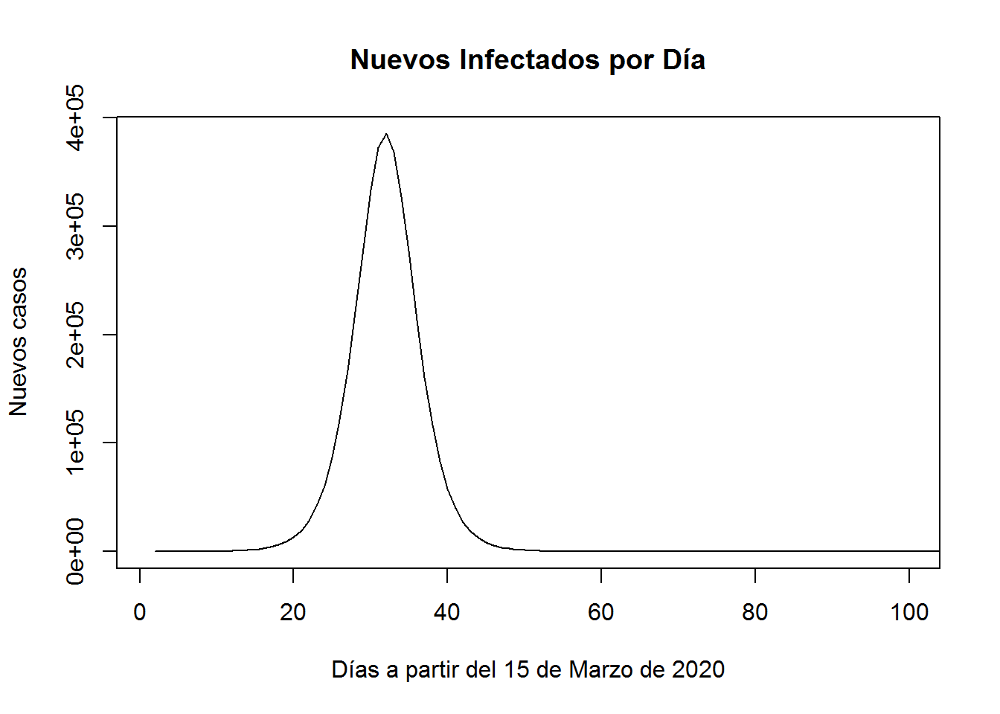
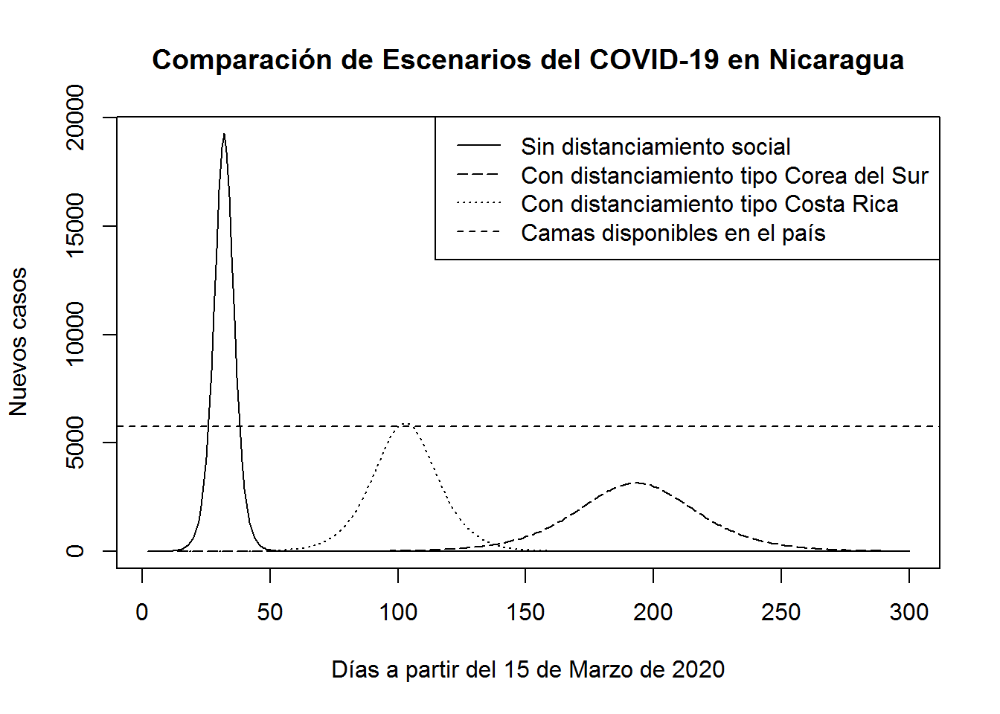

¿Qué Nos Dicen las Matemáticas y la Ciencia de Datos Sobre el COVID-19 y la Salud de los Nicaragüenses?
El COVID-19 es la infermedad infecciosa causada por el coronavirus de Wuhan. Existe mucha incertidumbre sobre el comportamiento que tendrá esta enfermedad en Nicaragua. Usaremos las estadísticas reportadas por otros países, datos poblacionales generales y modelos matemáticos del crecimiento biológico para sacar nuestras propias conclusiones. Que el ejercicio sirva para generar conciencia, discusión y mutuo aprendizaje.
Muertes a mediano y largo plazo
Usando la pirámide poblacional de Nicaragua, y la tasa de muertes por el COVID-19, podemos calcular cuántas personas podrían morir en Nicaragua. Dado que no hay impuesta una política de distanciamiento social, podemos asumir que la infección será generalizada. De esta forma, la relación con las muertes esperadas, asumiendo que todos se contagian, es fácil de estimar:
| Edad | Tasa de muertes | Hombres (2018) | Mujeres (2018) | Total (2018) | Muertes esperadas |
|---|---|---|---|---|---|
| 80+ años | 14.80% | 27,895 | 43,601 | 71,496 | 10,581.41 |
| 70-79 años | 8.00% | 61,948 | 79,837 | 141,785 | 11,342.80 |
| 60-69 años | 3.60% | 139,328 | 173,657 | 312,985 | 11,267.46 |
| 50-59 años | 1.30% | 219,068 | 264,092 | 483,160 | 6,281.08 |
| 40-49 años | 0.40% | 416,261 | 456,600 | 872,861 | 3,491.44 |
| 30-39 años | 0.20% | 500,276 | 521,400 | 1,021,676 | 2,043.35 |
| 20-29 años | 0.20% | 596,147 | 578,606 | 1,174,753 | 2,349.51 |
| 10-19 años | 0.20% | 635,653 | 595,813 | 1,231,466 | 2,462.93 |
| 0-9 años | 0.00% | 677,357 | 645,438 | 1,322,795 | 0.00 |
| TOTAL | TOTAL | 3,273,933 | 3,359,044 | 6,632,977 | 49,819.98 |
Así, de un total de 6,632,977, se espera que a causa del COVID-19 mueran a largo plazo 49,819.98, una tasa de mortalidad del 0.75%.
A mediano plazo podemos considerar únicamente a los centros urbanos, la población más expuesta al virus. Según el Banco Mundial al 2018 41.478% de la población vivía en el campo, esto es 58.522% de la población se estima vivía en concentraciones urbanas. Así, la población en riesgo de contagio corresponde a 3,881,751 personas, lo que resultaría en una mortalidad a mediano plazo de 49,819.98 * 0.58522 = 29,155.65 individuos.
Modelo de crecimiento dinámico de la infección
A corto plazo el número es más difícil de calcular, pues la población de infectados cambia de forma dinámica. Para hacerlo nos serviremos de modelos matemáticos usados en crecimientos poblacionales de micro y macro biología. Tsoularis and Wallace (2002) hace un resumen de estos modelos y propone algunas generalizaciones. Entre estos modelos, el modelo logístico de Verhulst (1838) es por mucho el más usado.
El modelo de Verhulst (1838) considera que al tiempo \(t\), el crecimiento de población del virus depende de la población contagiada actual \(N\), la tasa de crecimiento unitaria \(r\) y el tamaño de carga \(K\) que corresponde a los individuos expuestos a ser contagiados por el virus. Así, la tasa de crecimiento al tiempo \(t\) es
\[\begin{equation} \frac{dN}{dt} = rN \left( 1- \frac{N}{K} \right), \end{equation}\]
cuya solución en términos de población acumulada al tiempo \(t\), llamada \(N(t)\) es
\[\begin{equation} N(t) = \frac{KN_0}{(K - N_0)e^{-rt}+N_0}, \end{equation}\]
donde \(N_0\) es la población infectada inicial.
Con este modelo podemos podemos estimar el comportamiento del virus en los próximos meses y el pico de la infección.
Estimación del crecimiento en Nicaragua
Para poder usar el modelo anterior requerimos poder estimar:
- \(N_0\): población infectada inicial.
- \(r\): tasa de transferencia en etapas tempranas de la infección.
- \(K\): tamaño de la población expuesta a la infección.
Población infectada inicial
Según diario de Nicaragua, El 19 Digital, no existen casos de COVID-19 en el país al 15 de marzo de 2020. Los protocolos de prevención usados, no son infalibles. Basta con observar lo casos de COVID-19 en los paises vecinos de centroamérica para entender que a estas alturas es altamente probable que existan personas infectadas que no han sido identificadas.
Hasta el momento según el SICA, al 15 de marzo de 2020, en Centroamérica se habían identificado los siguientes casos:
| Países | Población | Casos Confirmados |
|---|---|---|
| Belize | 374,681 | 0 |
| Costa Rica | 4,906,000 | 35 |
| Guatemala | 16,910,000 | 2 |
| Honduras | 9,265,000 | 6 |
| Nicaragua | 6,632,977 | 0 |
| El Salvador | 6,378,000 | 0 |
| Panamá | 4,099,000 | 55 |
| República Dominicana | 10,770,000 | 11 |
Sin incluir a Nicaragua, esto implica un promedio de 0.207 casos confirmados por cada 100 mil habitantes. Si usamos esta tasa como referencia para reestimar el caso de Nicaragua, obtenemos 14 como el número estimado de personas infectadas en Nicaragua al día 15 de Marzo. Usaremos \(N_0\) igual a 14 en nuestro modelo.
Tasa de crecimiento
Para calcular la tasa de crecimiento de la infección podemos usar como referencia la base de datos de la OMS disponible por la organización Our Word in Data. La base de datos de la OMS se puede descargar en formato CSV de aquí.
Debido a que la base de datos es grande y difícil de manipular manualmente usando hojas de cálculo, hacemos uso de R, uno de los lenguajes de ciencia de datos más populares al día de hoy, para extraer la base de datos y calcular el promedio de crecimiento de todos los países registrados en la OMS:
COVID19 <- read.csv(url("https://covid.ourworldindata.org/data/full_data.csv"))
COVID19$location = factor(COVID19$location)
n = 0
srate_total = 0
rate_total = 0
na.count = 0
paises.na = c() #inicializar
conteo.pais.na = 0
for (country in levels(COVID19$location)[1:152]){ #153 es resumen Mundo
if (sum(COVID19$location == country) > 1){
n = n + 1
total_cases = COVID19$total_cases[COVID19$location == country]
srate = 0
rate = 0
for (i in 2:(sum(COVID19$location == country))) {
if(is.na(total_cases[i])){
conteo.pais.na = conteo.pais.na + 1
total_cases[i] = total_cases[i-1]
na.count = na.count + 1
paises.na[conteo.pais.na] = country
}
srate = srate + total_cases[i]/total_cases[i-1]
rate = srate/(i-1)
}
srate_total = srate_total + rate
rate_total = srate_total / n
}
}
cat("Tasa de crecimiento diario promedio por país es ", rate_total, "\n",
"Datos faltantes = ", na.count,"\n",
"de paises:", paises.na)## Tasa de crecimiento diario promedio por país es 1.398664
## Datos faltantes = 0
## de paises:Así, 1.399 es la tasa de crecimiento diaria del COVID-19. Esto implica que en un día hay un incremento de 0.399 de casos por unidad. Un valor increíblemente alto, y la razón por la cual vemos medidas tan extremas en muchas partes del mundo. En estos cálculos la tasa de crecimiento diaria de cada país tiene el mismo peso al momento de calcularse el promedio, independientemente de cuantos registros tenga cada país. Esto ayuda a reducir el sesgo de lo países que tenían más avance y sus tasas se habían reducido por las medidas de contención o por haber superado la crisis. Este último sería el caso de China.
También vale la pena considerar que la tasa de transferencia se pudiera reducir en países con alta humedad y termpertura. Incluso hay un estudio prelimiar presentado por Wang et al. (2020) que da soporte a esto. Sin embargo, la relación encontrada, aunque estadísticamente significativa, es baja. Estas consideraciones pueden mejorar la modelación, sin embargo, ante la incertidumbre, recomendaciones de la OMS sobre el tema de la temperatura y otros mitos y el escepticismo del gobierno australiano, para este ejercicio, en nuestro modelo mantendremos el análisis conservador usando la estimación de \(r\) = 0.399 que calculamos anteriormente.
Tamaño de la población expuesta a la infección
Partiendo de una población de 6,632,977 de Nicaragüenses, donde el 58.522% vive en zonas de concentración urbana, el grupo de interés se restingiría en 3,881,751 personas. Por simplicidad ignoraremos las zonas rurales al momento de hacer los cálculos, pues el desarrollo de la enfermedad en esas zonas es menor. Así, el valor \(K\) para nuestro modelo lo definimos como 3,881,751.
Estimación del pico de la crisis
Ajustando el modelo de Verhulst (1838) anteriormente expuesto obtenemos
\[\begin{equation} N(t) = \frac{(3,881,751)(14)}{(3,881,751 - 14)e^{-0.399t}+14}, \end{equation}\]
lo que genera una curva sinoidal como se muestra
Ahora, si en lugar de observar el crecimiento de los contagios, revisamos sólo los casos nuevos obtenemos

El modelo inicia al tiempo cero, con 14 casos el día 15 de Marzo. Aproximadamente para el 2020-03-23 se espera un crecimiento en el número de casos de 100 personas o más que se mantendrá hasta el 2020-05-10, cuando la saturación en la población haga que la infección se ralentice a menos de 100 casos por día. La mayoría de los casos de infección serán “inofensivos”, sin embargo, un 0.75% serán letales e impondrá un fuerte estrés al sistema de salud. Se espera que entre esas fechas el sistema de salud del país colapse a menos que se tomen medida precautorias, que incluso pueden probar no ser suficientes.
Los resultados calculados pueden resultar dramáticos para algunos. Sin embargo, este comportamiento es propio de los crecimientos exponenciales, y el escenario descrito corresponde muy de cerca con los escenarios no deseados y estimados en México.
¿Qué significa esto para el sistema de salud?
Aunque la mayor parte de los enfermos por COVID-19 pueden ser tratados desde su hogar, según Wu and McGoogan (2020), de entre 44,415 pacientes chinos, el 5% de los casos fueron críticos y 14% severos. Asumiendo que sólo los casos críticos requieren de hospitalización, como se ha hecho en otros casos, hacemos un ajuste a nuestra curva de casos nuevos por día.

Para efectos comparativos, en la gráfica anterior se agregó una línea punteada que representa las 5781 camas disponibles en hospitales en Nicaragua al 2017, según registro del INIDE. Esta es sólo una referencia, pues hay que considerar que no todas las camas están disponibles y pueden tardar semanas en liberarse.
¿Se puede mejorar esta situación?
Sí, sí se puede. Existen diversas estrategias para combatir la infección que han probado ser efectivas para reducir el crecimiento de la infección. Cabe notar que el avance del COVID-19 hace no factible evitar el contagio de la enfermedad aún en cuarentenas. Entre los países que han logrado mitigar el avance de las infecciones se encuentra Corea del Sur, que ha dado un ejemplo para el mundo, y de manera local Costa Rica.
Con sus medidas Corea del Sur ha logrado mantener una tasa de crecimiento que dobla los casos confirmados en 11 días. Esto implica una tasa diaria de crecimiento de \(2^{1/11}\) = 1.065. Es decir, que en un día los casos en Corea del Sur crecen en un \(r\) de 6.5 %. Por otro lado, siguiendo la misma fuente de información del caso de Corea del Sur, Costa Rica, también con medidas de distanciamiento social y otras medidas epidemiologicas recomendadas, mantiene una tasa de crecimiento inicial que dobla los casos confirmados en 6 días. Esto implica una tasa diaria de \(2^{1/6}\) = 1.122, o un \(r\) de 12.2%.
Si Nicaragua tomara las medidas de Corea del Sur o de Costa Rica, los casos que requerirían hospitalización se reducirían de la siguiente manera:

Claramente se observa que el efecto de tomar medidas como las de Corea del Sur deja al país en una situación grave, pero todavía manejable, con una esperanza de salir airosos de la crisis. El total de casos no se disminuye, pero poder controlar la tasa de crecimiento evita el colapso del sistema de salud.
Algunas consideraciones
Como en toda modelación, los supuestos son los que la sostienen. Entre estos supuestos el número de casos actuales \(N_0\) se estimó como 14, muy distinto los 0 casos identificados. Una mejor estimación mejoraría la estimación del pico de la crisis. Por ejemplo, si \(N_0\) se reestimara en 2, el período de la crisis se postergaría por 5 días. Analistas interesados pueden usar el modelo ya calibrado para estudiar distintos escenarios.
Para Concluir, ¿Qué Podemos Hacer?
Como conclusión, estamos al borde de una una situación crítica y única en el mundo, donde el actuar individual y colectivo de hoy tendrá un impacto duradero el nuestro futuro.
Las acciones son claras, el Centro Europeo de Prevención y Control tras hacer un análisis de riesgo de la situación resume las medidas de la siguiente manera:
- Distanciamiento social.
- Asegurar concientización social de la seriedad del COVID-19 y el rol de la higiene personal.
- Preparación de infraestructura y equipo en hospitales y locales destinados para atención médida a largo plazo.
- Entrenamiento a personal médico.
- Si las capacidades están limitadas, priorizar acciones que maximicen su efecto en las masas de población.
- Monitoreo y detección rápida de casos para reducir la diseminación de la enfermedad.
Actuar con prontitud y contundencia parece ser el curso recomendado. Postergar las acciones o implementarlas inadecuadamente puede llevar a graves consecuencias.
Referencias
Tsoularis, Anastasios, and James Wallace. 2002. “Analysis of Logistic Growth Models.” Mathematical Biosciences 179 (1): 21–55.
Verhulst, Pierre-François. 1838. “Notice Sur La Loi Que La Population Suit Dans Son Accroissement.” Corresp. Math. Phys. 10: 113–26.
Wang, Jingyuan, Ke Tang, Kai Feng, and Weifeng Lv. 2020. “High Temperature and High Humidity Reduce the Transmission of Covid-19.” Available at SSRN 3551767.
Wu, Zunyou, and Jennifer M McGoogan. 2020. “Characteristics of and Important Lessons from the Coronavirus Disease 2019 (Covid-19) Outbreak in China: Summary of a Report of 72 314 Cases from the Chinese Center for Disease Control and Prevention.” Jama.